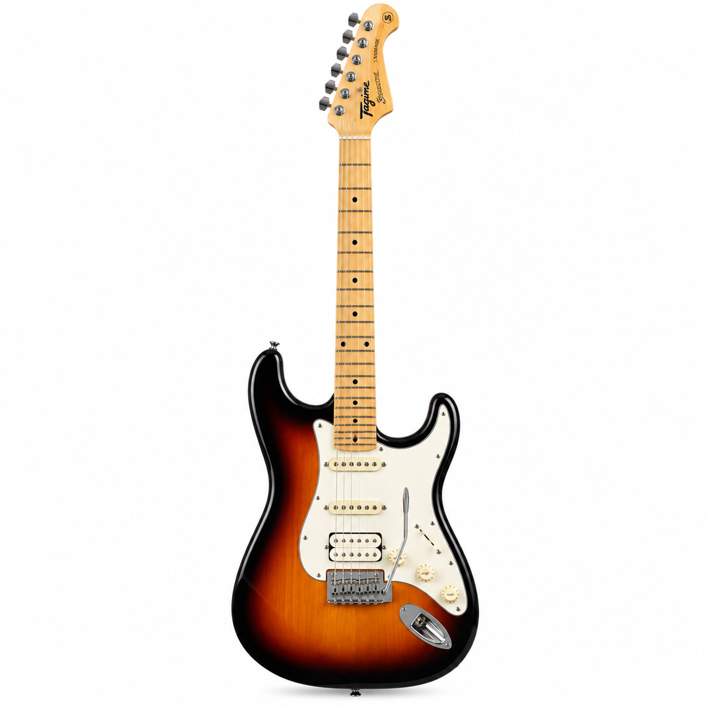
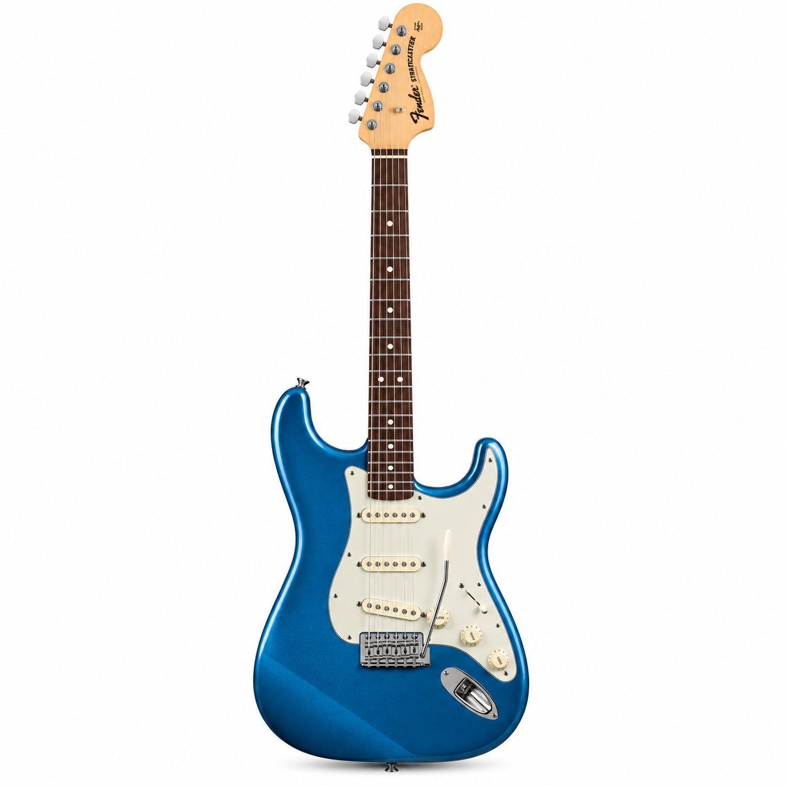
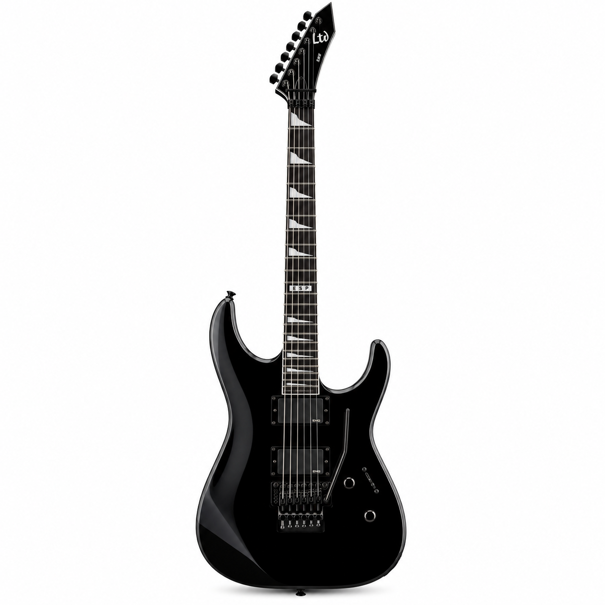
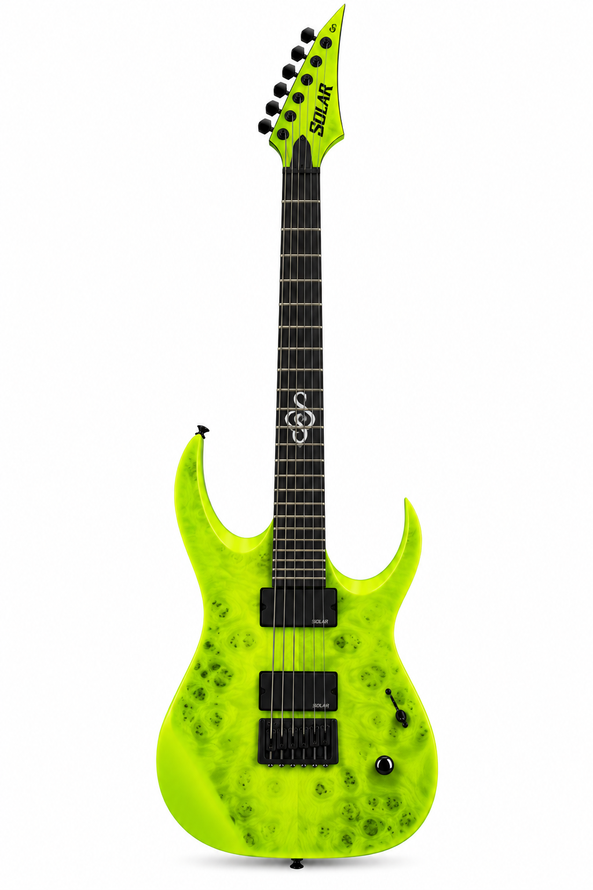

O DNA clássico da Stratocaster levado a um novo nível de desempenho.
A Fender American Ultra II Stratocaster foi desenvolvida para músicos que querem a identidade inconfundível de uma Strat, mas com recursos modernos de tocabilidade, precisão e versatilidade. O corpo em alder selecionado recebe contornos Ultra e uma região de junção do braço esculpida, oferecendo uma sensação confortável junto ao corpo e acesso mais livre às regiões agudas da escala.
O braço em maple quartersawn tem perfil Modern “D” e acabamento Ultra Satin Urethane, combinação pensada para proporcionar estabilidade e uma pegada rápida e suave. A escala em ébano utiliza raio composto de 10” a 14”: mais arredondada nas primeiras posições para conforto em acordes e progressivamente mais plana nas casas superiores, favorecendo bends e execução moderna. As bordas Ultra Rolled reforçam a sensação de um braço naturalmente confortável, enquanto os marcadores laterais Luminlay® ajudam na visualização em ambientes de pouca luz.
Na parte elétrica, três captadores Ultra II Noiseless™ Vintage Strat® preservam a clareza e a personalidade tradicional de uma configuração SSS, reduzindo o ruído característico dos single-coils. A chave seletora de cinco posições entrega as combinações clássicas da Stratocaster, enquanto o sistema S-1™ acrescenta novas possibilidades ao incluir o captador do braço nas posições 1 e 2. O resultado é uma paleta que vai de sons limpos definidos e cristalinos a timbres mais encorpados para bases e solos.
O conjunto de hardware acompanha a proposta premium: tremolo American Ultra sincronizado de dois pontos, saddles em aço inoxidável polido, bloco em aço laminado a frio e alavanca de encaixe. As tarraxas Deluxe locking de postes curtos facilitam a troca de cordas e ajudam na estabilidade de afinação. O acabamento Ultraburst é complementado pelo escudo em alumínio anodizado dourado e ferragens níquel/cromo.
É uma guitarra pensada para palco, estúdio e para o músico que procura uma Stratocaster de alto nível sem abrir mão da tradição Fender. O instrumento acompanha case rígido moldado Deluxe.
Principais destaques
• Corpo em alder selecionado com contornos Ultra e heel esculpido
• Braço quartersawn maple com perfil Modern “D” e acabamento Ultra Satin
• Escala em ébano com raio composto 10”–14”, 22 trastes Medium Jumbo e Luminlay®
• Trio Ultra II Noiseless™ Vintage Strat® em configuração SSS
• Eletrônica S-1™ para combinações adicionais de captadores
• Tremolo American Ultra de 2 pontos com saddles em aço inoxidável
• Tarraxas Deluxe locking de postes curtos
• Case rígido moldado Deluxe incluído
Compra segura do começo ao fim.
Esta área ficará ligada às políticas definitivas da SolMusic para frete, retirada, garantia, troca e devolução. Por enquanto, permanece como conteúdo demonstrativo do layout.
Outros destaques da SolMusic



